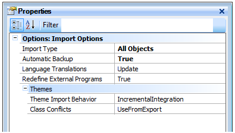

Import options are shown as properties belonging to the Import Dialog. To display these properties click on the Options links.
|
| Backlinks | ||
| Automatic Backup property | Class Conflicts Property | Import Type property |
| Knowledge Manager Import | Language Translations Property | Theme Import Behavior Property |